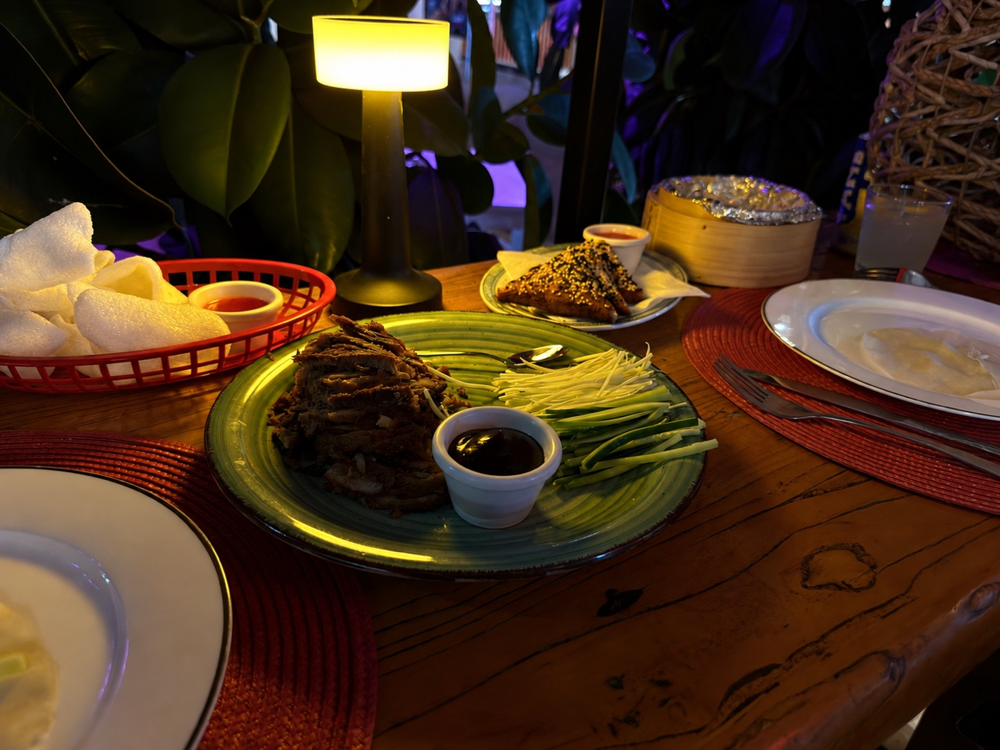

Thai and Chinese Takeaway in Chlorakas, Paphos. Freshly cooked Thai and Chinese food for takeaway and delivery.
The dining room, the seating area, and a few of our dishes.

Takeaway and delivery only.
| Sunday | 4:00pm – 10:00pm |
| Monday | Closed |
| Tuesday | 1:00pm – 10:00pm |
| Wednesday | 1:00pm – 10:00pm |
| Thursday | 1:00pm – 10:00pm |
| Friday | 1:00pm – 10:00pm |
| Saturday | 1:00pm – 10:00pm |
A taste of the menu — ask in-store or on the phone for the full list.
Classic Thai hot and sour, and creamy coconut soup, made fresh to order.
A guest favourite starter — crispy cauliflower in a sweet, spicy glaze.
A mild, rich, coconut-based Thai curry with your choice of chicken, beef, king prawn or veg.
Grilled skewers with a classic peanut dipping sauce.
Please let our staff know of any allergies before ordering — full ingredient information is available on request.